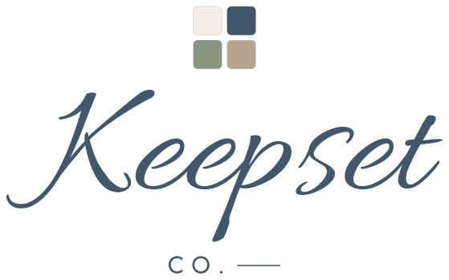

Made at the table
Your photo, printed and pressed here, while you shop the rest of the market.
Pick what you’re making
How it goes
- Pick one above and upload your photo. Crop it however you like.
- Pay here on your phone, or at the table.
- We print and press it. Come back when it’s ready.
A single takes a few minutes. Bigger sets take longer — we’ll give you a time to come back, so go and enjoy the rest of the market.
Not today? Everything here is at keepsetco.com, posted to you.